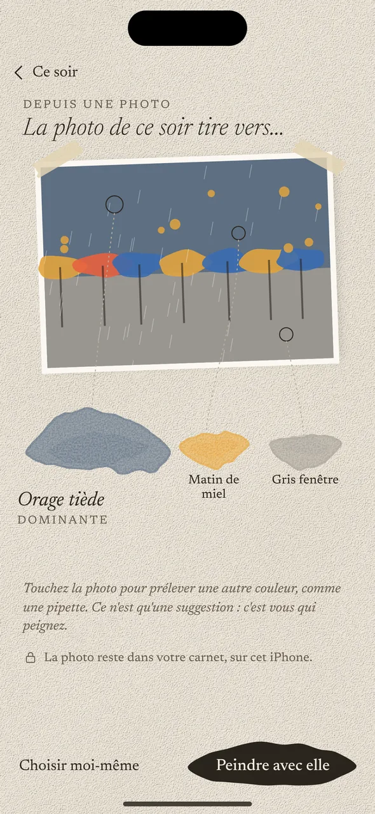
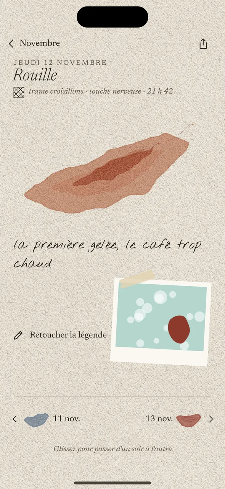
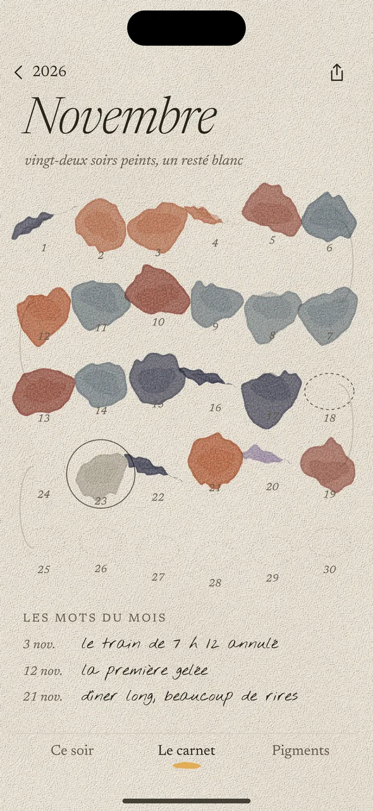
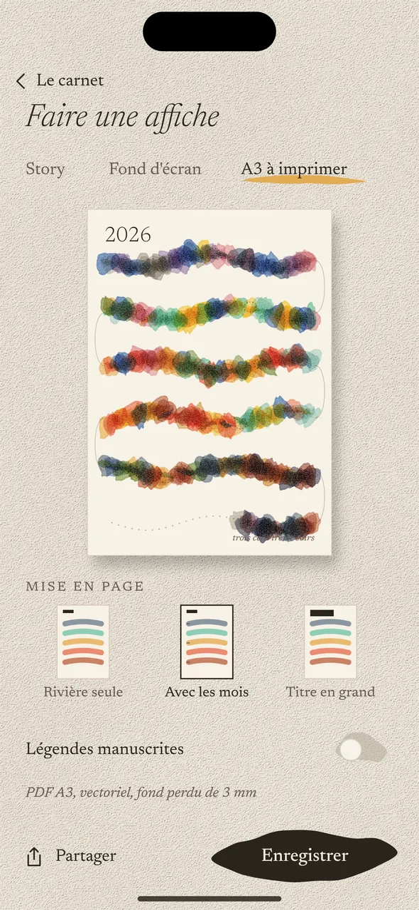
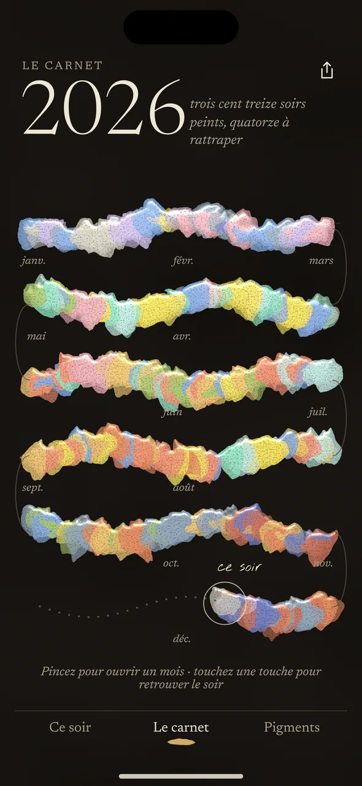

De quelle couleur était votre journée ?
Lavis est un carnet d’aquarelle pour iPhone. Chaque soir, une seule touche de couleur. À la fin de l’année, un tableau qui ne ressemble qu’à vous.
Un soir après l’autre, l’année se peint.
janvier
0 soir peint
L’hiver se peint en gris fenêtre et en encre de nuit.
Deux pigments, un mélange, un nom.
Certains soirs ne tiennent pas dans une seule couleur. Lavis vous laisse mêler deux pigments sur la feuille, puis baptiser ce qui en sort.
Orage de mielDans l’app, le nom est le vôtre.
Trente secondes, le soir venu.
Pas de journal à remplir, pas de note sur dix. Une touche, parfois un mot, et le carnet se referme.
Une touche, chaque soir
Restez appuyé, la couleur s’étale. Faites un geste vif, elle devient nerveuse. Il n’y a pas de bonne réponse, seulement la vôtre.
un soir lent, un soir presséOu la couleur d’une photo
Choisissez une photo de la journée : Lavis en tire le pigment, vous gardez la main sur la touche.

Un mot, si vous voulez
Une ligne écrite pour se souvenir de ce qui a coloré le soir. Ou rien du tout, la couleur suffit souvent.

Une page par mois
Pincez l’année pour ouvrir un mois, touchez une touche pour retrouver le soir qui va avec.

Votre année en affiche
Exportez le tableau de l’année, prêt à imprimer ou à offrir.
à accrocher en décembre
Aussi en carnet noir
Le mode sombre change de papier : les pigments s’éclaircissent pour rester lisibles à la lumière d’une lampe de chevet.

Rien ne quitte votre iPhone.
Vos soirs ne regardent que vous. Lavis fonctionne sans serveur : il n’y a nulle part où envoyer vos couleurs, et personne pour les lire.
- Aucun compteOuvrez l’app, peignez. Ni adresse e-mail, ni mot de passe.
- Aucune publicité, aucun pistagePas de régie, pas d’outil d’analyse, rien qui vous suive.
- Verrouillage par Face IDSi vous le souhaitez, le carnet s’ouvre avec votre visage seulement.
- Un rappel discretÀ l’heure que vous choisissez, une seule notification, préparée sur l’iPhone.
Ce soir, posez la première touche.
Le carnet commence le jour où vous l’ouvrez. Les soirs oubliés gardent leur place, vous pourrez les rattraper.